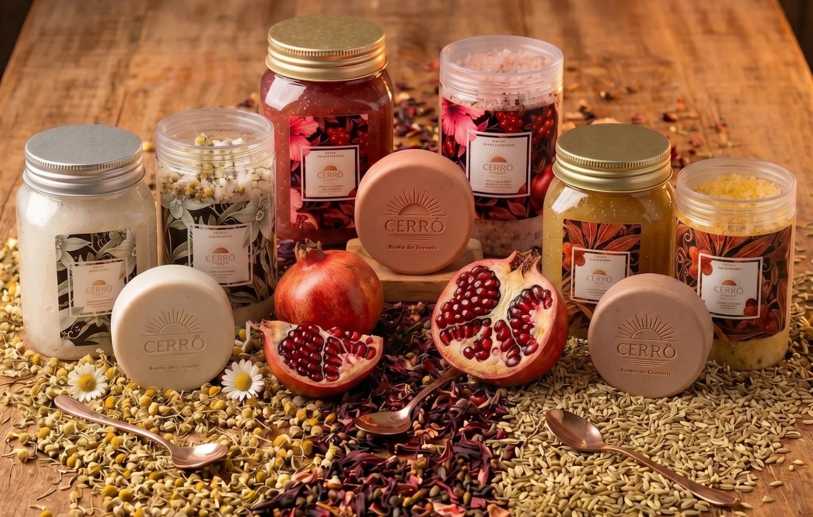

Saboaria artesanal do Cerrado
Respire.
O banho começa agora.
Sinta a força da terra, viva o seu ritual.
Sabonetes, sais e geleias de banho feitos à mão, unindo a botânica do nosso solo a alquimias olfativas profundas. Um spa que cabe no seu banheiro.
A Cerrô
A terra que racha sob o sol forte é a mesma que esconde as raízes mais profundas.
O Cerrado não é apenas a nossa paisagem; é a nossa força, a nossa matéria-prima e a nossa inspiração. Não entregamos apenas saboaria artesanal: entregamos rituais. Momentos de pausa onde o rústico encontra o luxo e a rotina cede espaço para a poesia do autocuidado.
Ler a história completaEscolha o seu
Três rituais,
três forças
Cada ritual reúne um sabonete, um sal de banho e uma geleia em torno de uma mesma alquimia olfativa. Leve as peças separadas ou o ritual completo.
Não sabe qual escolher?
Encontre
o seu ritual
Cada ritual foi formulado para uma necessidade diferente de pele. Três perguntas e a gente te diz qual é o seu.
Como funciona
Três peças,
uma sequência
A ordem importa. Cada produto prepara a pele para o próximo, e o banho inteiro vira um só gesto.
Sabonete em barra
80 g. A limpeza que abre o ritual. Argilas e extratos que purificam sem tirar da pele o que ela precisa manter.
Sais de banho
200 g. Sal de epsom, bicarbonato, óleos e flores secas. Dissolva na água quente e deixe o corpo desacelerar.
Geleia de banho
350 ml. A textura mais sensorial da casa. Extratos concentrados que nutrem e selam o cuidado no fim do banho.
Matéria-prima
A botânica
do nosso solo
Ativos escolhidos um a um, muitos deles nativos do Cerrado, trabalhados em pequenos lotes e à mão.
Para começar
Trio de
Sabonetes
Um de cada ritual
Ainda não sabe qual é o seu? Leve os três sabonetes da casa, Brisa Rosada, Toque de Algodão e Frescor do Amanhecer, e descubra qual essência combina com a sua pele.
R$ 84,00
Ver o trioO que nos move
Rústico
encontra luxo
Feito à mão
Produção artesanal em pequenos lotes, com atenção em cada detalhe.
Botânica nativa
Ativos e minerais do Cerrado, do barbatimão à argila vermelha.
Ritual, não rotina
Um tempo que é genuinamente seu, longe da pressa do dia.
Alquimia olfativa
Essências construídas em camadas, pensadas para permanecer.
Antes de comprar
Perguntas
frequentes
Depende da frequência. Em uso regular, de duas a três vezes por semana, o ritual completo dura de seis a oito semanas. O sabonete de 80 g costuma acabar primeiro; os sais de 200 g rendem cerca de oito banhos de imersão, e a geleia de 350 ml é a que dura mais.
Não. Na banheira o efeito é o mais completo, porque as flores e sementes infundem na água quente. Sem banheira, dissolva uma colher dos sais em uma bacia ou balde de água bem quente e use com uma bucha úmida sob o chuveiro. o aroma preenche o box do mesmo jeito.
O Ritual Despertar da Terra foi formulado justamente para peles sensíveis. Ainda assim, nossos produtos são cosméticos e não substituem avaliação médica: se você tem alergia a algum ingrediente, está grávida, amamentando ou trata alguma condição de pele, converse com um profissional antes. A lista completa de ingredientes está no rótulo, e também no WhatsApp, se quiser conferir antes de comprar.
Sais primeiro, para preparar a água e o corpo. Depois o sabonete, em movimentos circulares, deixando a argila agir por um minuto. A geleia por último, sobre a pele úmida, selando o cuidado. Cada página de ritual traz o passo a passo com os nomes dos produtos daquela linha.
Como é produção artesanal em pequenos lotes, o pedido leva até 3 dias úteis para ser preparado. Depois disso, o transporte leva de 3 a 8 dias úteis conforme a região. Você recebe o código de rastreio por WhatsApp e e-mail assim que postamos. Frete grátis acima de R$ 200,00.
Se o produto ainda estiver lacrado, sim. Você tem 7 dias corridos a partir do recebimento para desistir da compra, com devolução integral. Já aberto, por segurança e higiene, não conseguimos trocar por preferência de aroma. É por isso que existe o Trio de Sabonetes: para conhecer as três essências antes de escolher um ritual inteiro.
Fique por dentro
Antes de
todo mundo
O Ritual Florescer Eterno está a caminho. Cadastre-se para saber do lançamento, das edições limitadas e das ofertas da casa.
Enviamos só o que importa. Você pode cancelar quando quiser.